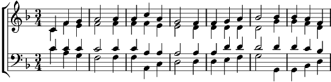

Refrain:
Tombe la neige sur mon enfance
Tombe le ciel sur mes souvenirs
La Sainte Vierge veille en silence
L'Emmanuel qui semble sourire
1. Que reste-t-il de ce doux mystère
Que reste-t-il au fond de mon cœur ?
Cette saveur semble bien amère
Mais ce refrain, je le sais par cœur
Refrain
2. Quand vient le doute, Noël se voile
Et je redoute, je crains le froid
Mais si je suis vraiment son étoile
Noël revient tout comme autrefois
Refrain